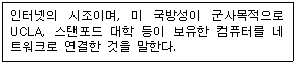
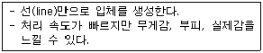
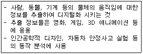
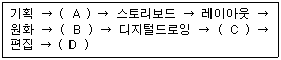
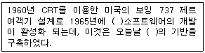
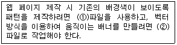
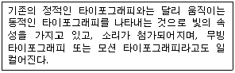

웹디자인기능사 (2010-10-03 기출문제)
1과목: 디자인 일반
1. 먼셀의 색상에서 5R 이 표준 빨강이면 1R은?
- 연지
- 다홍
- 주황
- 보라
(정답률: 65%)

2. 빛의 파장에 따른 굴절 각도를 이용하여 프리즘에 의한 가시 스펙트럼 색을 얻을 수 있었는데, 이것은 빛이 단색이 아니라 여러 가지 색의 혼합색이라는 것을 말한다고 정의한 사람은?
- 헤리
- 헬름홀츠
- 돈서스
- 뉴턴
(정답률: 82%)
3. 가산 혼색에서 혼색의 결과로 옳은 것은?
- 파랑(BLUE) + 녹색(GREEN) = 마젠타(MAGENTA)
- 파랑(BLUE) + 빨강(RED) = 시안(CYAN)
- 녹색(GREEN) + 빨강(RED) = 노랑(YELLOW)
- 파랑(BLUE) + 녹색(GREEN) = 검정(BLACK)
(정답률: 77%)
4. 균형의 가장 정형적인 구성 형식이며 균형이 잘 잡힌 상태로 통일감을 얻기 쉬우나, 딱딱한 느낌을 주는 원리는?
- 대칭
- 비대칭
- 비례
- 변화
(정답률: 88%)
5. 색을 보고 맛과 냄새 음과 촉감 등을 느낄 수 있어 톡 쏘는 듯 한 냄새가 연상되는 색은?
- 녹색
- 자색
- 오렌지색
- 라일락색
(정답률: 93%)
6. 서로 반대되는 색상을 배색하였을 때 나타나는 느낌으로 옳은 것은?
- 강한 느낌
- 간결한 느낌
- 정적인 느낌
- 온화한 느낌
(정답률: 91%)
7. 자연에서 쉽게 찾을 수 있고 온화함이 있지만, 때로는 단조로움을 주는 디자인 원리는?
- 유사조화
- 대비조화
- 대칭
- 비대칭
(정답률: 81%)
8. 서로 다른 요소가 잘 어울려 결합하는 상태는?
- 상징
- 조화
- 원금
- 강조
(정답률: 94%)
9. 일반적인 환경 디자인의 종류에 해당하는 것은?
- 산업정비 디자인
- 인테리어 디자인
- 디자인
- 캘린더 디자인
(정답률: 79%)
10. 다음 중 디자인의 표현 요소가 아닌 것은?
- 방향, 색
- 점, 선
- 질감, 크기
- 흔적, 영역
(정답률: 92%)
11. 디자인의 조건과 거리가 먼 것은?
- 경제성
- 장식성
- 독창성
- 심미성
(정답률: 87%)
12. 연속적인 패턴의 느낌과 관련 있는 시각원리는?
- 동세
- 균형
- 반복
- 변화
(정답률: 93%)
13. 디자인의 의미로 적합하지 않는 것은?
- 디자인이라는 말은 라틴어인 데시나레(Designare)에서 유래되었다.
- 디자인이란 하나의 그림 또는 모형으로서 그것을 전개시키는 계획 및 설계이다.
- 오늘날과 근접한 디자인의 의미는 미술공예 운동을 통해서이다.
- 프랑스어 데생(dessin)과도 어원을 같이 하고 있다.
(정답률: 70%)
14. 색의 혼합에서 텔레비전의 컬러 이미지는 어떤 방식으로 표현 되는가?
- 감산혼합
- 병치 가산혼합
- 회전혼합
- 감산혼합과 가산혼합
(정답률: 81%)
15. 새로운 예술이라는 뜻으로 19세기 말과 20세기 초에 걸쳐 프랑스를 중심으로 전 유럽에서 유행한 장식적인 양식은?
- 아르누보
- 아르데코
- 큐비즘
- 다다이즘
(정답률: 75%)
16. 두 색상을 동일한 양으로 혼합했더니 검정에 가까운 회색이 되었다. 이 때, 두 색상의 관계는?
- 대비색
- 보색
- 유사색
- 인근색
(정답률: 70%)
17. 가장 동적인 느낌을 주는 선의 종류는?
- 수평선
- 수직선
- 대각선
- 점선
(정답률: 66%)
18. 우편을 통하여 소비자에게 직접 광고 하는 것은?
- POP광고
- 신문광고
- DM광고
- 잡지광고
(정답률: 84%)
19. 혼합하는 색의 수가 많을수록 채도가 낮아지는 혼합은?
- 병치혼합
- 가법혼합
- 회전혼합
- 감산혼합
(정답률: 75%)
20. 가시광선에 대한 설명으로 틀린 것은?
- 빛의 파장 중 380nm에서 780nm사이의 범위로 눈으로 지각되는 영역을 말한다.
- 백색광이 프리즘을 통해 나타나는 색띠를 말한다.
- 라디오나 텔레비전, 휴대폰의 파장범위를 포함한다.
- 전자기파 스펙트럼이라고도 한다.
(정답률: 76%)
2과목: 인터넷 일반
21. 인터넷을 운영하는 각 기관의 주요 운영 정보를 조회하도록 지원하는 서비스는?
- FTP
- TCP/IP
- TELNET
- WHOIS
(정답률: 60%)
22. 음성, 데이터, 영상 신호 등을 하나의 통신망으로 전달할 수 있도록 설계된 종합 정보통신은?
- HDTV
- Videotex
- MIS
- ISDN
(정답률: 77%)
23. OSI 7계층에 해당하지 않는 것은?
- 물리 계층
- 전송 계층
- 네트워크계층
- 인터넷 계층
(정답률: 77%)
24. 자바스크립트에서 이벤트 핸들러에 대한 설명으로 틀린 것은?
- onBlur : 대상이 포커스를 잃어 버렸을 때 발생되는 이벤트를 처리
- onFocus : 대상에 포커스가 들어왔을 때 발생되는 이벤트를 처리
- onMouseOn : 마우스가 대상의 링크나 영역 안에 위치할 때 발생되는 이벤트를 처리
- onMouseOut : 마우스가 대상의 링크나 영역 안을 벗어 날 때 발생되는 이벤트를 처리
(정답률: 66%)
25. 다음 중 인터넷 서비스의 종류와 관련 서버가 옳게 연결된 것은?
- 전자우편(E-mail) 서비스 - Proxy 서버
- 파일전송(FTP) 서비스 - DNS 서버
- 월드와이드웹(WWW) 서비스 - Web 서버
- 텔넷(Telnet) 서비스 - SMTP 서버
(정답률: 79%)
26. 다음이 설명하고 있는 것은?

- USENET
- FTP
- WAIS
- ARPANET
(정답률: 80%)
27. 검색엔진을 이용한 정보 검색 요령 중 가장 적절하지 못한 것은?
- 검색엔진에 대한 질의 방법에 관한 설명서를 읽고 검색에 활용한다.
- 검색하고자 하는 정보에 따라 적절한 검색엔진을 선택 한다.
- 키워드를 포괄적이고 가장 큰 범위를 검색할 수 있도록 확대하여 입력한다.
- 오래된 정보를 위해서는 고퍼나 베로니카 등의 문자검색 서비스를 활용한다.
(정답률: 69%)
28. 웹 디자인에서 내비게이션에 대한 설명으로 틀린 것은?
- 웹 콘텐츠를 분류하고 체계화시킨 후 이들을 연결시켜 방문자로 하여금 웹사이트를 이용할 수 있게 하는 체계를 말한다.
- 일관성 있는 아이콘과 그래픽을 사용하여 사용자가 웹 페이지 어디서라도 길을 잃지 않고 필요한 정보를 쉽게 얻을 수 있도록 하는 것이다
- 웹 사이트의 전체적인 분위기를 결정하고 개인의 홍보나 회사의 홍보, 또 사용자간의 자발적 참여와 커뮤니티를 형성한다.
- 사이트의 이동경로나 이동방법, 이동을 돕는 구조와 인터페이스를 모두 포함하는 개념이다.
(정답률: 79%)
29. 인터넷상의 컴퓨터들 사이에서 데이터를 메시지 형태로 보내기 위해 IP와 함께 사용 되는 규약은?
- TCP(Transmission Control Protocol)
- CSO(Central Services Organization)
- CRC(Cyclic Redundancy Check)
- CMS(Cash mangement Service)
(정답률: 84%)
30. 자바스크립트에 대한 설명으로 틀린 것은?
- 자바스크립트 언어를 사용하기 위해서는 자바(JAVA)언어를 필독해야 한다.
- 자바스크립트는 썬 마이크로시스템즈와 넷스케이프가 공동으로 개발한 스크립트 언어이다.
- 자바스크립트 코드는 html 문서에<script>......</script> 태그 안에 작성해야 한다.
- 자바스크립트 코드를 html 문서와 별도의 파일로 작성하여 사용할 수도 있다.
(정답률: 54%)
31. 다음 중 html의 주석문 처리로 옳은 것은?
- !-- 여기는 주석문 입니다.--
- ?-- 여기는 주석문 입니다.--
- {-- 여기는 주석문입니다.--}
- <!-- 여기는 주석문입니다.-->
(정답률: 85%)
32. 무선 랜을 이용하여 네트워크를 구성하는 방법으로 AP (Access Point)를 중심으로 노드들을 제어하는 것은?
- Ad Hoc
- Central
- Ring
- Star
(정답률: 57%)
33. html에 대한 설명으로 옳은 것은?
- 하이퍼텍스트를 구성하기 위한 언어로서 웹페이지를 만들기 위한 기본 언어 또는 규약이다.
- 자바를 기반으로 한 객체 지향적 스크립트 언어이다.
- 기본구조는 HEAD(제목) 부분과 < >(태그)부분으로 이루어진다.
- 동적인 웹 페이지를 만들 수 있도록 하기 위한 기술이다.
(정답률: 61%)
34. 웹브라우저의 기능으로 틀린 것은?
- html 편집 작업
- 웹 페이지 열기
- 소스파일(html) 보기
- 웹페이지의 저장 및 인쇄
(정답률: 73%)
35. 일반적으로 웹브라우저에는 화면에 나타나는 데이터를 하드디스크의 일정한 공간에 자동으로 저장하여, 나중에 사용자가 해당 사이트에 다시 접속할 때 저장된 내용을 자동으로 불러와 사이트 접속과 데이터 전송에 소요되는 시간을 절약하게 하는 기능은?
- Messenger
- Cache
- Driver
- Reload
(정답률: 67%)
36. html에서 <Hn>태그에서 n값의 범위로 옳은 것은?
- 1부터 7까지
- 0부터 1까지
- 1부터 6까지
- 0부터 6까지
(정답률: 72%)
37. 인터넷의 방대한 정보를 효과적으로 검색하기 위한 검색엔진의 시스템이 나머지 하나와 다른 것은?
- 야후코리아(Yahoo)
- 네이버(Naver)
- 멀티서치(Multisearch)
- 다음(Daum)
(정답률: 87%)
38. Java 스크립트에 대한 설명 중 틀린 것은?
- script 언어이다.
- 마이크로소프트사에서 개발하였다.
- 프로그램 코드가 html 문서에 직접 삽입된다.
- 상호작용적인 웹 문서를 만들 수 있도록 지원한다.
(정답률: 74%)
39. 인터넷 익스플로러 6.0의 도구 메뉴의 인터넷 옵션 중에서 홈페이지를 볼 수 있는 등급, 사람의 신원 또는 웹사이트의 보안을 증명하는 문서와 사용자의 정보를 제공하는 것은?
- 일반
- 보안
- 개인정보
- 내용
(정답률: 54%)
40. html 태그 중 문자의 굵기나 크기, 강조, 색상 등과 관련이 없는 태그는?
- <HR>
- <B>
- <Hn>
- <BLINK>
(정답률: 53%)
3과목: 웹그래픽스 디자인
41. 다음 설명에 해당하는 3차원 모델링 방법은?

- 와이어 프레임 모델 (Wire-fram model)
- 서페이스 모델 (Surface model)
- 솔리드 모델 (Solid model)
- 파라메트릭 모델 (Parametric model)
(정답률: 82%)
42. 다음 설명에 해당하는 것은?

- 모션 캡처 (Motion Capture)
- 디지타이저 (Digitizer)
- CAVE (Cave Automatic Virtual Environment)
- 모델링 (Modeling)
(정답률: 78%)
43. 컴퓨터그래픽스에서 사용 가능한 이미지 확장자가 아닌 것은?
- JPG
- WAV
- BMP
- GIF
(정답률: 79%)
44. RGB컬러에서 R=255, G=255, B=255로 설정할 때 모니터에 나타나는 색상은?
- White
- Black
- Blue
- Yellow
(정답률: 76%)
45. 웹사이트 개발과정에 대한 설명으로 틀린 것은?
- 콘텐츠 디자인 단계 - 사이트 계층구조 설계 등 아이디어를 개념화
- 웹 사이트 디자인 단계 - 기획된 아이디어를 시각화
- 웹 사이트 구축 단계 - DB와 연동시키는 등의 각종 프로그래밍 작업
- 콘셉트 정의 단계 - 레이아웃 및 내비게이션 구조 설계
(정답률: 63%)
46. 그래픽 파일 형식에서 애니메이션을 지원하는 것은?
- EPS
- GIF
- PSD
- PNG
(정답률: 78%)
47. 다음은 컴퓨터 애니메이션의 단계별 제작 순서 이다. ( )안에 들어갈 제작과정이 A부터 D의 순서대로 맞게 나열된 것은?

- 시나리오, 디지털 채색, 녹음, 스캐닝
- 스캐닝, 시나리오, 디지털 채색, 녹음
- 시나리오, 스캐닝, 디지털 채색, 녹음
- 디지털 채색, 시나리오, 스캐닝, 녹음
(정답률: 79%)
48. 다음에서 일반적으로 웹사이트를 개발할 때 가장 먼저 해야 할 사항은?
- 웹 콘텐츠 디자인
- 웹사이트 마케팅
- 웹사이트 개발목표 확립
- 웹사이트 디자인
(정답률: 83%)
49. 웹 그래픽 작업 시 레이아웃 방식으로 적절치 않은 것은?
- 화면의 사이즈는 현재 가장 많은 사용자가 사용하는 그래픽 카드의 해상도를 기준으로 한다.
- 일관성 있는 메뉴 바의 고정을 위해 꼭 프레임 구조로 작업해야 한다.
- 안전영역 (Safe Zone)안에 중요한 메뉴가 위치하게 작업 한다.
- 일관성 있는 메뉴 바나 내비게이션 바의 페이지 간 연속성을 통하여 사용의 익숙함을 가지도록 한다.
(정답률: 70%)
50. 매 초당 보여지는 프레임의 수를 뜻하는 단위는?
- RPM
- LPI
- FPS
- DPI
(정답률: 69%)
51. 벡터(Vector)방식의 이미지를 비트맵(bitmap)방식 의 이미지로 변환시키는 것을 나타내는 용어는?
- Vectorizing
- Rasterizing
- Anti-aliasing
- Synchronizing
(정답률: 68%)
52. 색의 성질이나 작용을 논리적으로 체계화시킨 방법인 컬러모델 (Color Model)에 해당하지 않는 것은?
- RGB
- CMYK
- CRT
- HSV
(정답률: 68%)
53. 인간의 두뇌에 해당하는 것으로 대부분의 계산과 판단을 수행하는 컴퓨터그래픽스 시스템 하드웨어는?
- RAM
- LAN
- CPU
- ROM
(정답률: 83%)
54. 3차원 물체를 만드는 기본과정 중 단순한 형태에서 점차 복잡한 형상으로 구성 하는 모델링은?
- 쉐이딩
- 표면모델
- 프랙탈 모델
- 와이어프레임 모델
(정답률: 63%)
55. 다음은 제2세대의 컴퓨터 그래픽에 관한 설명 이다. ( )안에 공통으로 들어갈 알맞은 용어는?

- Computer Aided Design
- Computer Graphics
- Microsoft
- Macro Media
(정답률: 54%)
56. 웹 페이지에서 사이트 맵(Site map)이란?
- 문서 파일을 제외한 모든 이미지파일 및 디렉터리 구조를 작성해 보여주는 것이다.
- 텍스트 파일을 제외한 모든 이미지파일 및 디렉터리 구조를 작성해 보여주는 것이다.
- 이미지 파일을 제외한 모든 파일의 리스트 및 디렉터리 구조를 작성해 보여주는 것이다.
- 디렉터리 구조를 제외한 모든 파일의 리스트 및 구조를 작성해 보여주는 것이다.
(정답률: 56%)
57. 다음 빈 칸에 들어갈 파일 포맷으로 적절한 것은?

- ① JPG, ② GIF
- ① GIF, ② SWF
- ① PNG, ② GIF
- ① JPG, ② SWF
(정답률: 43%)
58. 픽셀의 구별이 뚜렷한 경계선의 거친 부분을 부드럽게 할 수 있는 기법은?
- scan conversion
- antialiasing
- stair casing
- glowing surface
(정답률: 84%)
59. 플래시에서 심벌(symbol)의 속성에 속하지 않는 것은?
- 무비 클립
- 버튼
- 액션스크립트
- 그래픽
(정답률: 61%)
60. 다음이 설명하고 있는 것은?

- 키네틱 타이포그래피
- 스테이틱 타이포그래피
- 다이나믹 타이포그래피
- 스타일리쉬 타이포그래피
(정답률: 54%)